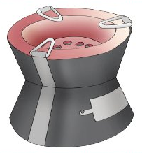

Zoezi la sita
Andika jina la picha ifuatayo kwenye daftari.

Andika jibu kwa mkono katika sehemu hii.
Zoezi la saba
Andika maneno kumi kutoka katika chati ifuatayo.
b a t a t u t a b u
k o b e b a b a d o
n u n a n i n i p e
m i b a b u a i b u
d o b i b i i i p a
k u m i t i m u d a
l a l a m i a k a a
s u k a k a t a t u
d a d a m u s a k a
p i p i p a s i m u
Maneno yanayoweza kuandikwa kutoka kwenye chati ni: bata, tatu, tabu, kobe, baba, bado, nani, nipe, babu, bua, dobi, bibi, kumi, timu, muda, lala, mia, kaa, suka, kata, dada, Musa, pipi, pasi na simu.
Andika jibu kwa mkono katika sehemu hii.